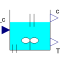

MixingUnitMixing unit demo from Foellinger, Nichtlineare Regelungen II, p. 280 |

|
Information
This information is part of the Modelica Standard Library maintained by the Modelica Association.
See description in ControlledMixingUnit.Parameters (8)
| c0 |
Value: 0.848 Type: Real (mol/l) Description: Nominal concentration |
|---|---|
| T0 |
Value: 308.5 Type: Temperature (K) Description: Nominal temperature |
| a1 |
Value: 0.2674 Type: Real Description: Process parameter (see references in help) |
| a21 |
Value: 1.815 Type: Real Description: Process parameter (see references in help) |
| a22 |
Value: 0.4682 Type: Real Description: Process parameter (see references in help) |
| b |
Value: 1.5476 Type: Real Description: Process parameter (see references in help) |
| k0 |
Value: 1.05e14 Type: Real Description: Process parameter (see references in help) |
| eps |
Value: 34.2894 Type: Real Description: Process parameter (see references in help) |
Connectors (3)
| T_c |
Type: RealInput Description: Cooling temperature |
|
|---|---|---|
| c |
Type: RealOutput Description: Concentration |
|
| T |
Type: RealOutput Description: Temperature in mixing unit |
Used in Examples (2)
|
Modelica.Clocked.Examples.Systems Simple example of a mixing unit where a (discretized) nonlinear inverse plant model is used as feedforward controller |
|
|
MixingUnitWithContinuousControl Modelica.Clocked.Examples.Systems.Utilities.ComponentsMixingUnit Simple example of a mixing unit where a (continuous) nonlinear inverse plant model is used as feedforward controller |
Used in Components (1)
|
Modelica.Clocked.Examples.Systems.Utilities.ComponentsMixingUnit Block to determine the minimum filter order |